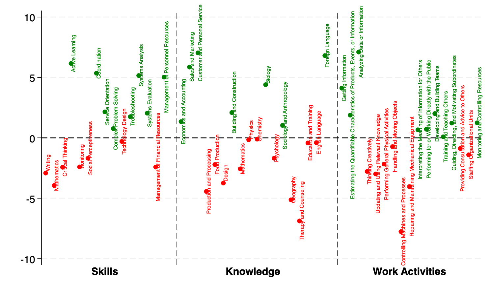

Green Skills
What are green skills? 
Interactive Green Skill Space.
- For all jobs in the economy, their green category, and their locatio in the green skill space.
- Green skill space by the level of education, experiences, and training (job zone).
Interactive Green Skill Dissimilarity between any pair of occupations.
- Interactive heatmaps show green skill dissimilarity by job zone along with detailed green skill differences.
- A quick preview here! The green skill dissimilarity heatmap for all jobs.
Data
- Occupational Green Potentia Index.
- Green occuptions.
- Brown occuptions.
- Skills and job zones.
Others
- Skill Spcae using full set of skills
- Crosswalk.